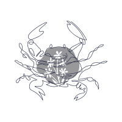

Al igual que todos los signos del Zodíaco del elemento Agua, los nativos de Cáncer son sensible, aunque su resistente coraza exterior no siempre lo pueda revelar. Al final, esta, no es más que una auto protección que esconde un interior suave y vulnerable en el que se recoge cuando se siente lastimado o inseguro. La Luna, planeta regente de este signo, regula su sus hábitos y un Cáncer típico aprecia, sobre todo, la previsibilidad de su rutina.
Los nativos de Cáncer no aprecian la confrontación y, en una situación de conflicto directo, tienden más a retirarse que a luchar. Su naturaleza es indirecta, prudente y evasiva, lo que no quiere decir que no logre sus objetivos y obtenga resultados. La paciencia y la tenacidad son sus mayores recursos. Los nativos de este signo son los mejores para cuidar de los demás. La Luna, su planeta regente, simboliza la familia, la maternidad y el hogar y estas preocupaciones están en la cima de las prioridades de Cáncer.